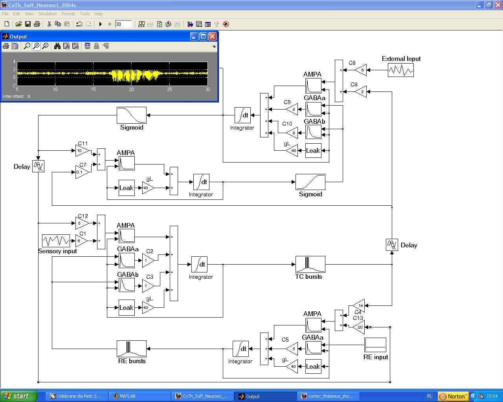

The package CxTh.zip contains the software for the simulations for figure 2 of the article Suffczynski, P., Kalitzin S. & Lopes da Silva, F.H. Dynamics of non - convulsive epileptic phenomena modeled by a bistable neuronal network. Neuroscience, 126(2): 467-484, 2004. Execution of the Matlab file Fig2_Suff_Neurosci_2004.m runs the model and plots the figure: 